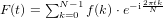

離散フーリエ変換は、フーリエ変換の一種です。名前の通り、連続空間ではなく、離散空間内で定義されます。略としてDFTと呼ばれることがあります。

f(k)は信号の観測値等の実数とし、F(t)は周波数成分とします。ただし一般的な教本では、入力配列f、出力周波数配列Fではなく、入力配列x、出力周波数配列Xで表す以下のような表記とすることがあるので併記しておきます。

無論、2つの数式は記号が違うだけで同じものを指します。出力配列をYとする技術者もいるので、記号はケースバイケースで使用されてるといっても良いかと思います。
フーリエ変換との明確な違いは積分がないことです。そのため検証が容易にできます。しかし計算量はNが大きくなると爆発的に拡大していくことは明らかです。Nの2乗のオーダーの計算量は、GPU/DSP/FPGA等の並列処理が得意なプロセッサでも難しいサイズの計算です。